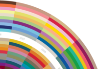
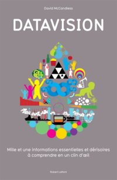

How much does Hollywood earn?
Wed, 01 Feb 2012 19:29:30 +0000
Major anti-online piracy laws like PIPA/SOPA and ACTA are designed to protect the intellectual property of businesses like the US movie industry. Hollywood cites yearly losses of billions of dollars to illegal internet downloads as justification for new legislation. (source, PDF) But what do the numbers say? See our data and calculations: http://www.bit.ly/movierevs. (And, um, [...]
Major anti-online piracy laws like PIPA/SOPA and ACTA are designed to protect the intellectual property of businesses like the US movie industry.
Hollywood cites yearly losses of billions of dollars to illegal internet downloads as justification for new legislation. (source, PDF)
But what do the numbers say?

See our data and calculations: http://www.bit.ly/movierevs.
(And, um, if you can supply worldwide DVD sales figures, please get in touch!)
RESEARCH & DESIGN: David McCandless
ADDITIONAL RESEARCH: Miriam Quick
SOURCE: MOTION PICTURE ASSOCIATION OF AMERICA (PDF)
DATA: BIT.LY/MOVIEREVS
A Taxonomy of Ideas?
Fri, 13 Jan 2012 12:10:43 +0000
Recently, when throwing ideas around with people, I’ve noticed something. There seems to be a hidden language we use when evaluating ideas. Neat idea. Brilliant idea. Dumb idea. Bad idea. Strange idea. Cool idea. There’s something going on here. Each one of these ideas is subtly different in character. Each adjective somehow conveys the quality [...]

Recently, when throwing ideas around with people, I’ve noticed something. There seems to be a hidden language we use when evaluating ideas.
Neat idea. Brilliant idea. Dumb idea. Bad idea. Strange idea. Cool idea.
There’s something going on here. Each one of these ideas is subtly different in character. Each adjective somehow conveys the quality of the concept in a way we instantly and unconsciously understand.
For instance, a ‘neat’ idea is not the same as a ‘brilliant’ idea. A ‘bad’ idea is not quite the same as a ‘dumb’ idea.
But why?
I started wondering: is there an invisible language of ideas? Could there be an unseen hierarchy hidden in that language? What qualities actually make a ‘good’ or ‘bad’ idea? Could you visualize and plot the most popular words used to describe ideas? Would that unveil the structure? And would doing that be a ‘nice’ idea? Or a ‘terrible’ one?
I’m not sure. So, I’d like to share my first draft and invite your feedback and thoughts.
RESEARCH & DESIGN: David McCandless
ADDITIONAL RESEARCH: Kathryn Ariel Kay
The Top 21 Albums of 2011 from 120 Top 10 Lists
Mon, 02 Jan 2012 14:55:13 +0000
All the top-rated albums from all the top top-ten lists visualized. Try saying that with a mouthful of egg-nog. Thanks to Metacritic.com’s awesome data clumping. Here’s nearly all of them on a single Spotify playlist.

All the top-rated albums from all the top top-ten lists visualized. Try saying that with a mouthful of egg-nog. Thanks to Metacritic.com’s awesome data clumping.
Here’s nearly all of them on a single Spotify playlist.
Scales of Devastation
Fri, 25 Nov 2011 15:30:19 +0000
I was trying to get my head around the scale of the Thailand floods. So I did. See the result in my visualisation column for the Guardian Datablog. The data has other numbers we couldn’t quite visualise. See here: http://www.bit.ly/scalesdev. Design: David McCandless Research: Miriam Quick Data: http://www.bit.ly/scalesdev. Sources: BBC, Wikipedia, USGS.gov and other media [...]

I was trying to get my head around the scale of the Thailand floods. So I did.
See the result in my visualisation column for the Guardian Datablog.
The data has other numbers we couldn’t quite visualise. See here: http://www.bit.ly/scalesdev.
Design: David McCandless
Research: Miriam Quick
Data: http://www.bit.ly/scalesdev.
Sources: BBC, Wikipedia, USGS.gov and other media reports (see datasheet for details)
Our second $5000 information design challenge is on!
Thu, 17 Nov 2011 09:22:32 +0000
We’ve got another pot of info-design gold to give away – and this time your work might land you on the Guardian Datablog. Last month we ran our first visualization challenge. And, boy, did you peeps really rise to it. And here’s our second challenge: MON€Y PANIC$! The financial system, debt crises, recession fears, Wall [...]
We’ve got another pot of info-design gold to give away – and this time your work might land you on the Guardian Datablog.
Last month we ran our first visualization challenge. And, boy, did you peeps really rise to it.
And here’s our second challenge: MON€Y PANIC$!
The financial system, debt crises, recession fears, Wall St occupation, currency devaluation, collapse of the markets, the END OF THE WORLD! It’s all getting rather mind-boggling.
So we and the Guardian have found some juicy datasets we want you to use to explain what in the world is going on. Clearly. Understandably. Visibly.
Top prize is $2000 for a full design. Non-designers can win $1000 in our sketch-based napkin comp. All winners will feature on the Guardian Datablog.
We might add an interactive/motion-graphics string this time if we get enough entries.
All the info – dates, rules, guidelines, entry details – is over on the Information is Beautiful Awards site.
Now go show Gordon Gecko what you got. (You can take lunch, though.)
Hollywood budgets – extended deadline
Tue, 24 Jan 2012 14:59:11 +0000
Well, our Information is Beautiful Awards challenge on movie budgets is proving more popular than a DVD of Juno on a wet afternoon. We’ve had loads of great entries already. And some amazingly creative ideas are popping up. Like, Jermone Cukier‘s explorations of the dollar value of individual features of a plot. He cross-referenced keywords [...]

Well, our Information is Beautiful Awards challenge on movie budgets is proving more popular than a DVD of Juno on a wet afternoon.
We’ve had loads of great entries already. And some amazingly creative ideas are popping up.
Like, Jermone Cukier‘s explorations of the dollar value of individual features of a plot. He cross-referenced keywords for each movie on IMDb with box office return. The result? A price tag for each plot element.
Having an explosion in your film could earn you $150m, he finds. A love triangle $37m. And a psychopath – just $32m. See the list.
All this is very exciting and creative so we’re extending the closing deadline by a week.
You now have until Monday 6 February to get your ideas to us.
» Check out the challenge at InformationIsBeautifulAwards.com
» Check out the data
You can create a design, an interactive piece or even a sketch on a napkin to tell your own movie stories. The winners share a showbiz-worthy $5,000 prize-pot, thanks to kind sponsors Kantar.com.
In the meantime, why not explore this revealing snippet of data. Top 10 films for each year not by Hollywood’s favourite, gross. But by profitability, percentage of against budget, not just cash-pull. Changes the top 10 movie charts considerably…
See the data sheet in Google Docs
CONCEPT: David McCandless
SOURCES: The-Numbers.com, BoxOfficeMojo, IMDB, Wikipedia
DATA GATHERERS: Miriam Quick, Marley Whiteside, Dan Hampson, Pearl Doughty-White, Matt Hancock, Alexia Wdowski, Alex Lemon
Hollywood Budgets – A $5000 Data-Viz Challenge
Tue, 10 Jan 2012 21:46:12 +0000
This might be our best dataset yet. A massive sheaf of numbers on every major Hollywood film since 2007. Their budgets, review scores, grosses, genres and profits. Just in time for the Oscars in February! We’re challenging people to visualise this data – either in a design or an interactive piece. And, thanks to beloved [...]
This might be our best dataset yet. A massive sheaf of numbers on every major Hollywood film since 2007. Their budgets, review scores, grosses, genres and profits. Just in time for the Oscars in February!
We’re challenging people to visualise this data – either in a design or an interactive piece. And, thanks to beloved sponsors Kantar, we’ve got $5000 to give away to the winners.
Best of all – you don’t need to be able to design. You can sketch your entry on a napkin.
» Check out the challenge at InformationIsBeautifulAwards.com
» Check out the data
The Matrix
I’m so excited about this dataset. We hand-compiled it over a year. It’s fully comprehensive and flips up the hood on Hollywood. Let me just go through it with you.
For every Hollywood & major US film of the last 5 years, it collates:
- lead studio
-
reviews – Rotten tomatoes metascore (all critics’ reviews combined into a single score) & audience score
-
story type (of the 22 potential types of plot – see this PDF for a summary)
- genre
-
grosses – opening weekend, domestic gross, foreign gross, and worldwide (plus number of theatres in US opening weekend)
-
budget (very difficult figure to find for some movies, especially flops)
and best of all
profitability - what % of the production budget was recovered at the box office.
Profitability
It always bugs me how Hollywood grades or broadcasts the success of a film by gross income. Profitability, or % of Budget Recovered, is a way better grade of a film’s success. Especially in America, where each film has such high printing and advertising costs, that it needs to recover about 250-300% of its budget to be deemed a true hit.
In fact, if you use Profitability as an index, it changes the view considerably. Take 2007, for example, where the biggest grossing film was Pirates Of The Caribbean: At Worlds End. But it only recovered 320% of its budget. But the most profitable film of 2007 by far was…
Can you guess? Have a look at the data.
CONCEPT: David McCandless
SOURCES: The-Numbers.com, BoxOfficeMojo, IMDB, Wikipedia
DATA GATHERERS: Miriam Quick, Marley Whiteside, Dan Hampson, Pearl Doughty-White, Matt Hancock, Alexia Wdowski
SPECIAL THANKS TO Phil Hodges (sorry it didn’t work out man!)
Information is Beautiful Awards: Shortlist #2
Tue, 13 Dec 2011 15:46:49 +0000
The second shortlist of amazing entries for the monthly Information is Beautiful Awards challenge is up! Tasks don’t come much bigger than the one we set with the Guardian Datablog – visualizing the financial crisis. But you didn’t let us down. Follow the links to see this month’s selected visualizers - Design challenge - Napkin [...]

The second shortlist of amazing entries for the monthly Information is Beautiful Awards challenge is up!
Tasks don’t come much bigger than the one we set with the Guardian Datablog – visualizing the financial crisis.
But you didn’t let us down.
Follow the links to see this month’s selected visualizers
- Design challenge
- Napkin challenge
- Interactive challenge (category debut)
If you missed out on entering or being shortlisted this month, fear not! The next monthly challenge will be announced soon.
Keep on top of announcements by following our awards on Twitter.
We’re hiring! Again!
Fri, 25 Nov 2011 12:18:30 +0000
**Applications are now closed.** If you sent one in, thank you. We’ll be in touch with shortlisted people early in the New Year. Want to be a part of the Information Is Beautiful team? Now’s your chance. We’ve got loads of interesting book, web and film projects looming, including a new tome from David. You’ll [...]
**Applications are now closed.**
If you sent one in, thank you. We’ll be in touch with shortlisted people early in the New Year.

Want to be a part of the Information Is Beautiful team? Now’s your chance.
We’ve got loads of interesting book, web and film projects looming, including a new tome from David.
You’ll earn decent money, develop amazing prospects, and work with a fun and lovely team.
-
Designers – Are you an all-rounder with a perfectionist slant? Do you have a demonstrable interest in infographics and visualisations and all things beautiful? Junior & middleweight.
-
Researchers – Are you a fact-hound who’s nimble with a spreadsheet? Can you see the stories that numbers tell? Are you accurate, methodical, geeky, FAST?
-
Interns (design and research) – Do you love infographics and visualisations? Do you want to learn a thing or two while you help us out? (And actually get paid for your time.)
-
Flash & HTML5 ninjas (design and research) – Do you like to code data so it comes alive? Want to extend your skills into dynamic, unfolding, playful data visualisations? Thought so.
What you need to send us:
- your CV
- portfolio and/or links to your work (for designers / ninjas)
- some quick reasons why you fit our bill
- the dates you’re available for work
- your location (we’re in London, so it’d help if you are too – though we have possibilities for remote work)
Help us spot your email. Make the subject line [Job title you're applying for] – [Your Name]
Applications close at midnight (GMT) on Friday, 9th December, 2011.
Aimes-tu La Datavision?
Mon, 07 Nov 2011 14:15:20 +0000
The French edition of our book – Datavision – is out. Très excitant! You can have a interactive leaf through some of the book’s pages here. And then pop over to Amazon to snag a copy. Apparently French kids are already calling it “archifrais” (“super-fresh!”). Win A Copy We’re so excited about this, we’re going to give [...]
The French edition of our book – Datavision – is out. Très excitant!
You can have a interactive leaf through some of the book’s pages here.
And then pop over to Amazon to snag a copy.
Apparently French kids are already calling it “archifrais” (“super-fresh!”).

Win A Copy
We’re so excited about this, we’re going to give a copy to five of you, our beautiful readers.
*** Update ***
The winners are:
- Jonathan Cantor, New York
- Irina Pinjaeva, Moscow
- Michiel Vandewalle, Bruges
- Rebecca Rubin, Washington DC
- Emmanuel Alquier, Paris
Millard Euro-O-Gram
In the meantime, whet your Datavision appetites with this Francophilic Billion Euro-o-Gram we created recently for Le Monde.
It’s available in Francophonic format too. (sorry it looks a bit ropey – French words are longer – see a higher rez version here (browse to page 20)
DESIGN & RESEARCH: David McCandless
ADDITIONAL RESEARCH: Alex Lemon
ADDITIONAL DESIGN: Derek Guo
SOURCES: Le Monde, BBC, Forbes and other media reports
DATA: bit.ly/bndollar2